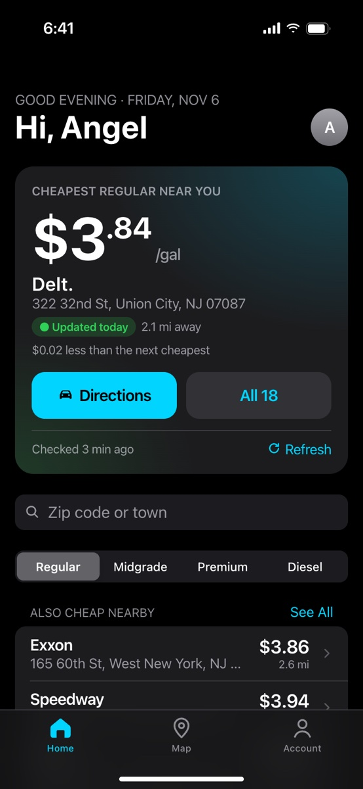
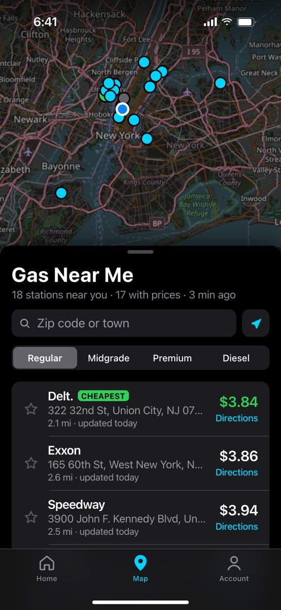
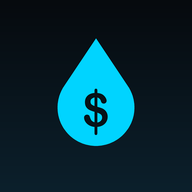

01 · Personal project
GassyBot
Find the cheapest gas around you, from an app on your phone's home screen.
Started as a Discord bot that posts gas prices, then grew into an installable phone app designed to look and feel like a native iPhone app. It finds your location, pulls real station prices from Google Places, and ranks nearby stations by price for regular, midgrade, premium, or diesel.
- Built a Flask API (
/api/nearby,/api/search) on top of the Google Places API, with caching and a daily request cap to keep API costs at zero - Designed the interface after Apple's iOS guidelines: large titles, grouped lists, a segmented fuel picker, and a translucent tab bar
- Made it an installable PWA: a service worker opens it instantly and shows your last prices even offline
- Interactive Leaflet map, saved stations, and optional Firebase login for syncing across devices
- Deployed on Render with automatic deploys from GitHub
- Python
- Flask
- JavaScript
- Google Places API
- Leaflet
- PWA
- Firebase
- discord.py
Runs on a free server, so the first visit after a while can take up to a minute to wake up.